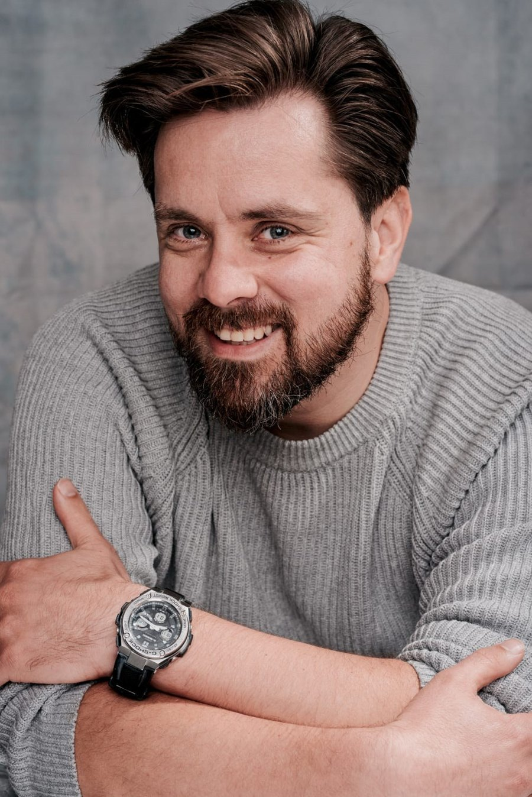

Weet je niet welke kant je op wilt? Dan kijken we eerst naar de vraag.
Ik ben Jasper, mental- en loopbaancoach. Samen maken we van een vaag gevoel een heldere hulpvraag en testen we meteen wat werkt.

13 reviews
Eerst docenten gecoacht, nu jou
Na 20 jaar nieuwe docenten coachen verrijkte ik mijn expertise met een opleiding tot mental- en loopbaancoach. Daarna startte ik mijn eigen praktijk, Mentalift.
Jouw geluk staat centraal. Ik werk doelgericht, nuchter en zonder omwegen, en je merkt snel of we de goede kant op gaan.
Systematisch en praktisch, verdieping voor verdieping
Elke stap levert iets op dat je kunt gebruiken.
Een heldere hulpvraag
We formuleren samen wat je wilt weten of veranderen. Daar begint elk traject.
Systematisch onderzoeken
We kijken naar alle relevante aspecten van je situatie en vertalen de inzichten meteen naar concrete acties.
Testen en bijsturen
Elke oplossing proberen we in de praktijk en evalueren we kortcyclisch: snel en regelmatig. Zo merk je meteen wat werkt, nuchter en met zichtbare vooruitgang.
Ervaringen van klanten
Ik wist lange tijd niet welke richting ik op wilde met mijn leven en had geen duidelijk vooruitzicht. Jasper heeft mij op verschillende momenten in mijn leven geholpen [via een coachingstraject] en ik ben hem daar enorm dankbaar voor.Richard V., Zwolle
De keuze van Jasper is zijn no-nonsence aanpak. Jasper helpt fantastisch om de patronen te herkennen en komt met inzichten. Dit traject is een goede investering.Marlies S., Zwolle
Jasper heeft me enorm geholpen met van alles. Hij is respectvol en luisterend en heeft veel nuttige praktische kennis. Als deze beschrijving je aanspreekt is hij zeker wat voor jou!Maureen vG., Zwolle
9,6 gemiddeld op Trustoo, op basis van 13 reviews.
Begin met een gratis intakegesprek
Mail of bel Jasper en vertel kort waar je mee zit. Dan bekijken jullie samen of coaching bij je past.
Mail voor een intake- Telefoon
- 06 29 45 75 80
- jasper@mentalift.nl
- KvK
- 77046404